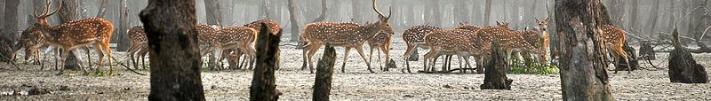
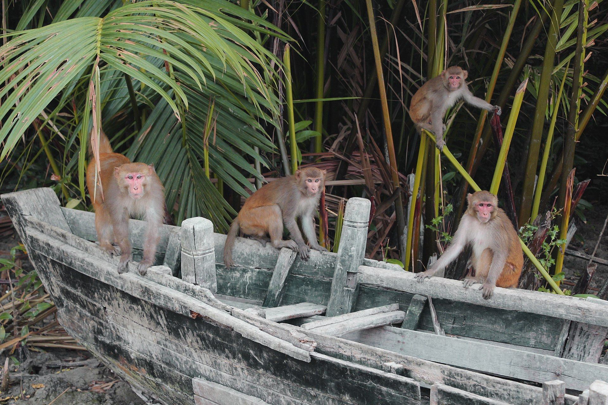
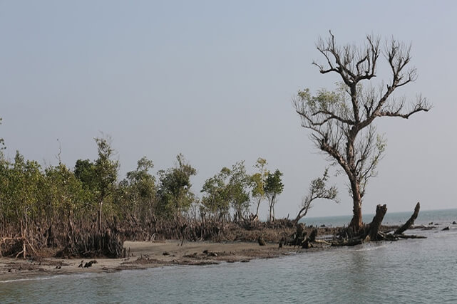
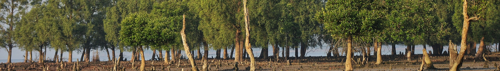
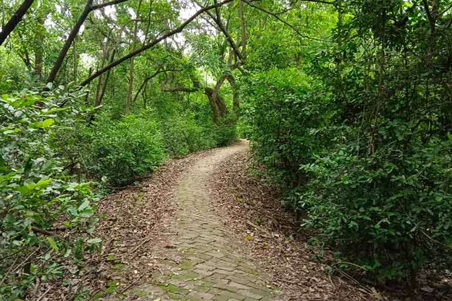
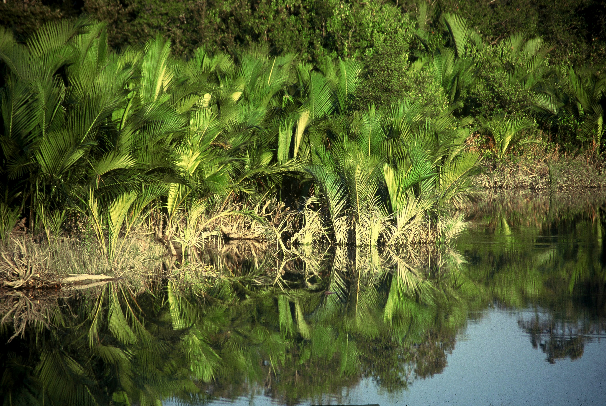
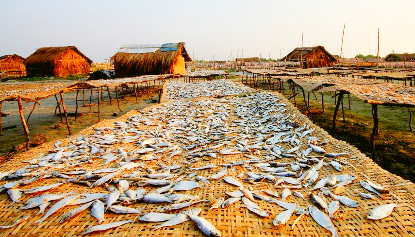

প্রাকৃতিক সৌন্দর্য

সুন্দরবন
সুন্দরবন পৃথিবীর সবচেয়ে বড় ম্যানগ্রোভ বন বা লবণাক্ত বনাঞ্চল। সুন্দরবনের মোট আয়তন প্রায় ১০ হাজার বর্গ কিলোমিটার, যা যৌথভাবে বাংলাদেশ ও ভারতের মধ্যে অবস্থিত। সুন্দরবনের বাংলাদেশ অংশের আয়তন ৬,৫১৭ বর্গ কিলোমিটার। খুলনা , সাতক্ষীরা, বাগেরহাট, পটুয়াখালি ও বরগুনা জেলার অংশ নিয়েই বাংলাদেশের সুন্দরবন। ভারতের সুন্দরবন পশ্চিমবঙ্গের দক্ষিণ ২৪ পরগণা জেলা ও উত্তর ২৪ পরগণা জেলা নিয়ে গঠিত। ১৯৯৭ সালে ইউনেস্কো সুন্দরবনকে বিশ্ব ঐতিহ্যবাহী স্থান হিসেবে স্বীকৃতি প্রদান করে। জীববৈচিত্রে সমৃদ্ধ সুন্দরবনের ১,৮৭৪ বর্গকিলোমিটার জুড়ে রয়েছে নদীনালা ও বিল মিলিয়ে জলাকীর্ণ অঞ্চল। রয়েল বেঙ্গল টাইগার সহ বিচিত্র নানান ধরণের পাখি, চিত্রা হরিণ, কুমির ও সাপসহ অসংখ্য প্রজাতির প্রাণীর আবাসস্থল হিসেবে সুন্দরবন পরিচিত। এখানে রয়েছে প্রায় ৩৫০ প্রজাতির উদ্ভিদ, ১২০ প্রজাতির মাছ, ২৭০ প্রাজাতির পাখি, ৪২ প্রজাতির স্তন্যপায়ী, ৩৫ সরীসৃপ এবং ৮ টি উভচর প্রাণী। সুন্দরী বৃক্ষের নামানুসারে এই বনের নাম সুন্দরবন রাখা হয়। সুন্দরবনের ভেতরে যেতে হলে নৌপথই একমাত্র উপায়।
ঢাংমারী বন্যপ্রাণ অভয়ারণ্য
বাগেরহাট জেলার সুন্দরবন সংলগ্ন ঢাংমারী এলাকায় এই অভয়ারণ্যটি অবস্থিত। ঢাংমারী এলাকার ৩৪০ হেক্টর এলাকা নিয়ে এই অভয়ারণ্যটি বিস্তৃত। শকুনের নিরাপদ এলাকা-২ তফসিল অনুসারে সোনারচর বন্যপ্রাণী অভয়ারণ্য শকুনের জন্য নিরাপদ বলে ঘোষিত। ২০১২ সালে সুন্দরবনের ঢাংমারী, চাঁদপাই ও দুধমুখী এলাকার নদীকে ডলফিনের অভয়ারণ্য ঘোষণা করে পরিবেশ ও বন মন্ত্রণালয়। এ তিনটি এলাকার ১০.৭ বর্গকিলোমিটার নদীতে রয়েছে ইরাবতি ডলফিন ও শুশুকের বিচরণ।
মাঝের চর, শরণখোলা
মাঝের চর বাংলাদেশের সুন্দরবন-ঘেঁষা বলেশ্বর নদের মধ্যবর্তী একটি চর বা দ্বীপ। এ দ্বীপের আয়তন ৬৪০ একর। বলেশ্বর নদের বুকে গড়ে ওঠা মাঝের চর দৈর্ঘ্যে প্রায় ২.৫ কিলোমিটার এবং প্রস্থে ১.৪ কিলোমিটার। ৪০ এর দশকে এ দ্বীপটি জেগে ওঠে। এ দ্বীপে উপকুলীয় বিভিন্ন উপজেলা লোকজন এসে বসতি স্থাপন করছে। এক সময় এখানে বালুচর থাকলেও বিগত ৬০ থেকে ৭০ বছর আগে থেকে এখানে ম্যানগ্রোভ উদ্ভিদ, গুল্ম-লতা, গোলপাতা জন্মাচ্ছে। বর্তমানে সুন্দরবন অঞ্চলে মাছ শিকার করে থাকেন এমন জেলেরা এ দ্বীপকে নানাভাবে কাজে লাগাচ্ছেন জনকল্যাণে মাঝের চরকে কাজে লাগানোর জন্য এ দ্বীপ নিয়ে বাংলাদেশ সরকারের বিভিন্ন পরিকল্পনা রয়েছে।[১] এখান থেকে একইসাথে সুন্দরবন ও বঙ্গোপসাগরের সৌন্দর্য অবলোকন করা যায় বলে বাংলাদেশ অর্থনৈতিক অঞ্চল কর্তৃপক্ষ এখানে পর্যটন কেন্দ্র করার উদ্যোগ নিয়েছে।[
চাঁদপাই বন্যপ্রাণ অভয়ারণ্য
চাঁদপাই বন্যপ্রাণী অভয়ারণ্য বাংলাদেশের একটি দর্শনীয় স্থান, যা বাগেরহাট জেলার অন্তর্গত। এটি দেশের রাজধানী ঢাকা হতে ৩৫০ কিমি দক্ষিণ-পশ্চিমে অবস্থিত যা ২০১২ সালে অভয়ারণ্য এলাকা হিসেবে ঘোষণা করা হয়। বাগেরহাট জেলার সুন্দরবন সংলগ্ন চাঁদপাই এলাকায় এই অভয়ারণ্যটি অবস্থিত। চাঁদপাই এলাকার ৫৬০ হেক্টর এলাকা নিয়ে এই অভয়ারণ্যটি বিস্তৃত। শকুনের নিরাপদ এলাকা-২ তফসিল অনুসারে চাঁদপাই বন্যপ্রাণী অভয়ারণ্য শকুনের জন্য নিরাপদ বলে ঘোষিত। ২০১২ সালে সুন্দরবনের ঢাংমারী, চাঁদপাই ও দুধমুখী এলাকার নদীকে ডলফিনের অভয়ারণ্য ঘোষণা করে পরিবেশ ও বন মন্ত্রণালয়। এ তিনটি এলাকার ১০.৭ বর্গকিলোমিটার নদীতে রয়েছে ইরাবতি ডলফিন ও শুশুকের বিচরণ।
দুধমুখী বন্যপ্রাণ অভয়ারণ্য
বাগেরহাট জেলার সুন্দরবন সংলগ্ন দুধমুখী জলাভূমি এলাকায় এই অভয়ারণ্যটি অবস্থিত। দুধমুখী এলাকার ১৭০ হেক্টর এলাকা নিয়ে এই অভয়ারণ্যটি বিস্তৃত। শকুনের নিরাপদ এলাকা-২ তফসিল অনুসারে দুধমুখী বন্যপ্রাণী অভয়ারণ্য শকুনের জন্য নিরাপদ বলে ঘোষিত। ২০১২ সালে সুন্দরবনের ঢাংমারী, চাঁদপাই ও দুধমুখী এলাকার নদীকে ডলফিনের অভয়ারণ্য ঘোষণা করে পরিবেশ ও বন মন্ত্রণালয়। এ তিনটি এলাকার ১০.৭ বর্গকিলোমিটার নদীতে রয়েছে ইরাবতি ডলফিন ও শুশুকের বিচরণ।
সুন্দরবন পূর্ব বন্যপ্রাণ অভয়ারণ্য
সুন্দরবন পূর্ব বন্যপ্রাণী অভয়ারণ্য বাংলাদেশের একটি দর্শনীয় স্থান, যা সুন্দরবনের অন্তর্গত। এটি দেশের রাজধানী ঢাকা হতে ২৫০ কিমি দক্ষিণ-পশ্চিমে অবস্থিত। ১২২৯২০.৯০ হেক্টর এলাকা জুড়ে এই বন্যপ্রাণী অভয়ারণ্যটি গঠিত, যা বাগেরহাট জেলার মধ্যে পড়েছে। সুন্দরবন পৃথিবীর সবচেয়ে বড় ম্যানগ্রোভ বন বা লবণাক্ত বনাঞ্চল। সুন্দরবনের মোট আয়তন প্রায় ১০ হাজার বর্গ কিলোমিটার, যা যৌথভাবে বাংলাদেশ ও ভারতের মধ্যে অবস্থিত। সুন্দরবনের বাংলাদেশ অংশের আয়তন ৬,০১৭ বর্গ কিলোমিটার। খুলনা , সাতক্ষীরা, বাগেরহাট, পটুয়াখালি ও বরগুনা জেলার অংশ নিয়েই বাংলাদেশের সুন্দরবন। সুন্দরবনের বাংলাদেশ অংশের আয়তন ৬,০১৭ বর্গ কিলোমিটার। খুলনা , সাতক্ষীরা, বাগেরহাট, পটুয়াখালি ও বরগুনা জেলার অংশ নিয়েই বাংলাদেশের সুন্দরবন। ভারতের সুন্দরবন পশ্চিমবঙ্গের দক্ষিণ ২৪ পরগণা জেলা ও উত্তর ২৪ পরগণা জেলা নিয়ে গঠিত। ১৯৯৭ সালে ইউনেস্কো সুন্দরবনকে বিশ্ব ঐতিহ্যবাহী স্থান হিসেবে স্বীকৃতি প্রদান করে।
দুবলার চর
দুবলার চর বাংলাদেশ অংশের সুন্দরবনের দক্ষিণে, কটকার দক্ষিণ-পশ্চিমে এবং হিরণ পয়েন্টের দক্ষিণ-পূর্বে অবস্থিত একটি দ্বীপ যা চর নামে হিন্দুধর্মের পূণ্যস্নান, রাসমেলা এবং হরিণের জন্য বহুল পরিচিত। কুঙ্গা ও মরা পশুর নদের মাঝে
এটি একটি বিচ্ছিন্ন চর।[১] এই চরের মোট আয়তন ৮১ বর্গমাইল। আলোরকোল, হলদিখালি, কবরখালি,
মাঝেরকিল্লা, অফিসকিল্লা, নারকেলবাড়িয়া, ছোট আমবাড়িয় এবং মেহের আলির চর নিয়ে দুবলার চর গঠিত।
টাইগার পয়েন্ট
কৃতিক সৌন্দর্যের লীলাভূমি, বন্যপ্রাণীর অভয়ারণ্য, রয়েল বেঙ্গল টাইগারের আবাসস্থল সুন্দরবন ক্রমেই সৌন্দর্য পিপাসু ভ্রমণকারীদের জন্য হয়ে উঠেছে তীর্থস্থান।তাই আপনি কেন বাদ থাকবেন সুন্দরবন ভ্রমণের রোমাঞ্চকর অভিজ্ঞতা থেকে। ঘুরে আসুন সুন্দরবন, চারপাশে বানরের খেলা, কুমিরের চলাচল এবং হরিণের মায়াবি চোখ, কাঠের ট্রেইলে বনে হাঁটা আপনাকে দিবে এমন রোমাঞ্চকর অভিজ্ঞতা, যার স্মৃতি বয়ে বেড়ানো যায় সারা জীবন